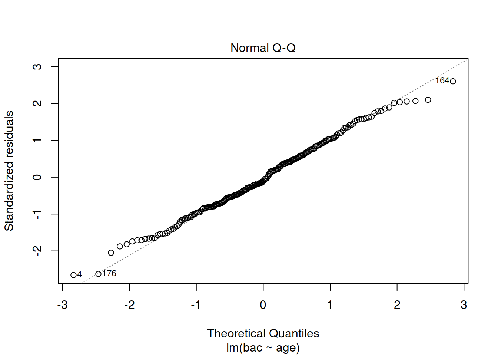
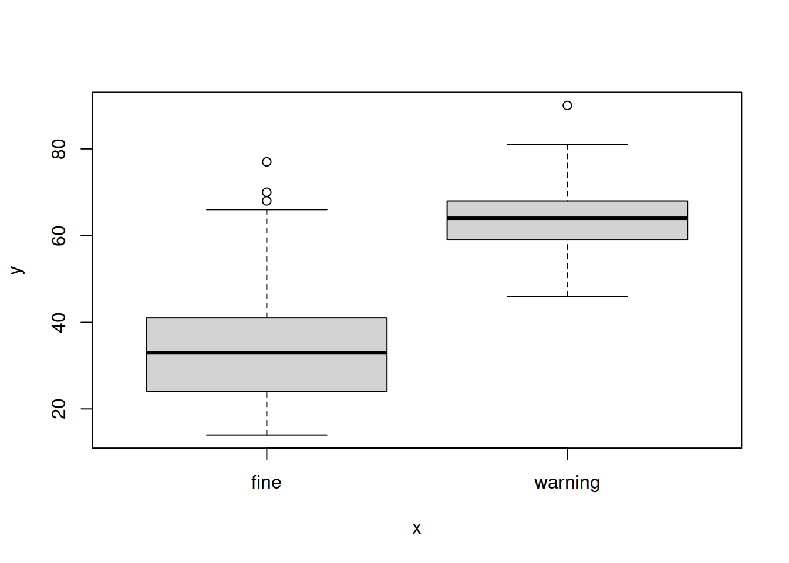
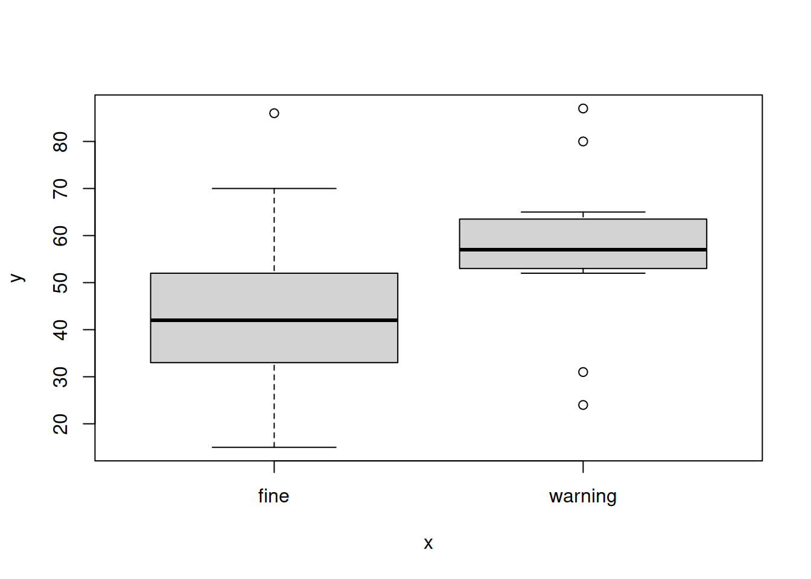
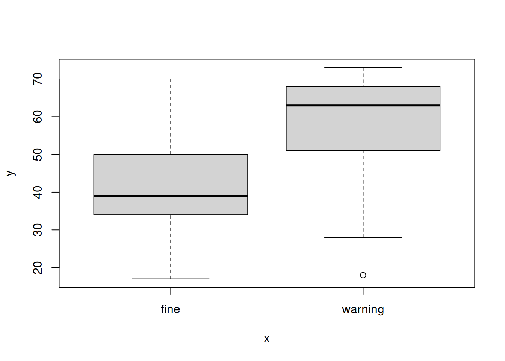

library(ggplot2) # for plotting
library(lme4)
# deviations from the mean (from Lab 7 Solution)
outliers <- function(obs, x = 3) {
# return TRUE if outlier, FALSE otherwise for each element of 'obs'
return(abs(obs - mean(obs, na.rm = T)) > (sd(obs, na.rm = T) * x))
}
# To transform prior_offence data points into one of 3 levels for factorisation
bundle_offs <- function(data) {
if (grepl("N", data)) {
return("none")
}
else if (grepl("DR50", data)) {
return("drink")
}
else {
return("other")
}
}
# Read in data ----------------------------------------------------------------
load(url("https://uoe-psychology.github.io/uoe_psystats/usmr/usmr_1920_assignment.RData"))
# =============================================================================
# Preprocessing
# =============================================================================
# Age -------------------------------------------------------------------------
# Remove implausible ages, specifically targeting three outliers ~300 noted
drinkdriving$age[drinkdriving$age > 120] <- NA
drinkdriving$age[drinkdriving$age < 12] <- NA
# Nighttime -------------------------------------------------------------------
# Transform nighttime into a logical factor instead, where:
# TRUE is "night"
drinkdriving$nighttime[drinkdriving$nighttime == "night"] <- TRUE
# FALSE is "day"
drinkdriving$nighttime[drinkdriving$nighttime == "day"] <- FALSE
# and anything else becomes NA when we formally convert to logical
drinkdriving$nighttime <- as.logical(drinkdriving$nighttime)
# Prior offence ---------------------------------------------------------------
# For use in Q3, create a new column as a three-level factor where prior
# offense history is bundled into `none`, `drink`, or `other` types
drinkdriving$prior_three <- sapply(drinkdriving$prior_offence, bundle_offs)
drinkdriving$prior_three <- as.factor(drinkdriving$prior_three)
# Additionally, create another column of logical T/F prior history
# Uses logic: if row has `none` as bundled history from last step; then False
# else True (`drink` or `other`)
drinkdriving$prior_yesno <- ifelse(drinkdriving$prior_three == "none",F, T)
# Outcome ---------------------------------------------------------------------
# Lowerise all strings to account for variation in capitalisation and
# normalise to the desired two levels as a factor
drinkdriving$outcome <- tolower(drinkdriving$outcome)
drinkdriving$outcome <- as.factor(drinkdriving$outcome)
# BAC -------------------------------------------------------------------------
# Remove outliers >3 SD above the mean for this sample (specifically targeting
# two high-end data points)
drinkdriving$bac[which(outliers(drinkdriving$bac))] <- NA
# Incident ID -----------------------------------------------------------------
# Factorize for consistency with `officer_inc` data set
drinkdriving$incident_id <- as.factor(drinkdriving$incident_id)
# Then merge the two data sets, essentially adding officer info. to the main
# data set via a join on `incident_id`s
drinkdriving <- merge(drinkdriving, officer_inc)
# =============================================================================
# QUESTION 1
# =============================================================================
m1 <- lm(bac ~ age, data = drinkdriving)
# Q1.1 ------------------------------------------------------------------------
# Explore the statistics of the model
summary(m1)##
## Call:
## lm(formula = bac ~ age, data = drinkdriving)
##
## Residuals:
## Min 1Q Median 3Q Max
## -15.3270 -4.1824 -0.5698 3.9975 14.9487
##
## Coefficients:
## Estimate Std. Error t value Pr(>|t|)
## (Intercept) 28.68503 1.06949 26.82 < 2e-16 ***
## age -0.13730 0.02331 -5.89 1.47e-08 ***
## ---
## Signif. codes: 0 '***' 0.001 '**' 0.01 '*' 0.05 '.' 0.1 ' ' 1
##
## Residual standard error: 5.791 on 216 degrees of freedom
## (32 observations deleted due to missingness)
## Multiple R-squared: 0.1384, Adjusted R-squared: 0.1344
## F-statistic: 34.69 on 1 and 216 DF, p-value: 1.469e-08# Q1.2 ------------------------------------------------------------------------
new_age <- data.frame(age=c(50))
predict(m1, newdata = new_age)## 1
## 21.81983# Q1.3 ------------------------------------------------------------------------
# Only plot Normal Q-Q
plot(m1, which=c(2))
# =============================================================================
# QUESTION 2
# =============================================================================
# Because we will be comparing models for this question, need to ensure all are
# fitted to the same size of dataset. Do this by omitting NAs in a special
# version of the dataset.
q2_data <- na.omit(drinkdriving)
# Replicate the model from Q1, but with all NAs omitted
m2A <- lm(bac ~ age, data = q2_data)
# Q2.1 ------------------------------------------------------------------------
# Scaling continous predictors because they use different units from here on.
# Create a model with age and time of day as predictors
m2B <- lm(bac ~ age + nighttime, data = q2_data)
# Compare versus baseline with just age
anova(m2A, m2B)## Analysis of Variance Table
##
## Model 1: bac ~ age
## Model 2: bac ~ age + nighttime
## Res.Df RSS Df Sum of Sq F Pr(>F)
## 1 214 6948.0
## 2 213 6250.8 1 697.27 23.76 2.131e-06 ***
## ---
## Signif. codes: 0 '***' 0.001 '**' 0.01 '*' 0.05 '.' 0.1 ' ' 1# Create a model with age and speed of driving as predictors
m2C <- lm(bac ~ age + scale(speed), data = q2_data)
# Compare versus baseline with just age
anova(m2A, m2C)## Analysis of Variance Table
##
## Model 1: bac ~ age
## Model 2: bac ~ age + scale(speed)
## Res.Df RSS Df Sum of Sq F Pr(>F)
## 1 214 6948.0
## 2 213 6919.2 1 28.847 0.888 0.3471# Q2.2 ------------------------------------------------------------------------
# Use summary to display r-squared values for each to assess explanation of
# variance in BAC
summary(m2A)##
## Call:
## lm(formula = bac ~ age, data = q2_data)
##
## Residuals:
## Min 1Q Median 3Q Max
## -15.3651 -4.1773 -0.5542 4.1637 12.0745
##
## Coefficients:
## Estimate Std. Error t value Pr(>|t|)
## (Intercept) 29.04216 1.05998 27.399 < 2e-16 ***
## age -0.14642 0.02314 -6.328 1.44e-09 ***
## ---
## Signif. codes: 0 '***' 0.001 '**' 0.01 '*' 0.05 '.' 0.1 ' ' 1
##
## Residual standard error: 5.698 on 214 degrees of freedom
## Multiple R-squared: 0.1576, Adjusted R-squared: 0.1537
## F-statistic: 40.04 on 1 and 214 DF, p-value: 1.436e-09summary(m2B)##
## Call:
## lm(formula = bac ~ age + nighttime, data = q2_data)
##
## Residuals:
## Min 1Q Median 3Q Max
## -16.3421 -4.3987 0.2997 3.7390 14.4090
##
## Coefficients:
## Estimate Std. Error t value Pr(>|t|)
## (Intercept) 26.00346 1.18497 21.944 < 2e-16 ***
## age -0.13690 0.02209 -6.199 2.91e-09 ***
## nighttimeTRUE 3.86857 0.79364 4.874 2.13e-06 ***
## ---
## Signif. codes: 0 '***' 0.001 '**' 0.01 '*' 0.05 '.' 0.1 ' ' 1
##
## Residual standard error: 5.417 on 213 degrees of freedom
## Multiple R-squared: 0.2422, Adjusted R-squared: 0.235
## F-statistic: 34.03 on 2 and 213 DF, p-value: 1.498e-13summary(m2C)##
## Call:
## lm(formula = bac ~ age + scale(speed), data = q2_data)
##
## Residuals:
## Min 1Q Median 3Q Max
## -15.446 -3.963 -0.632 3.973 12.218
##
## Coefficients:
## Estimate Std. Error t value Pr(>|t|)
## (Intercept) 28.19051 1.39317 20.235 < 2e-16 ***
## age -0.12644 0.03139 -4.029 7.8e-05 ***
## scale(speed) 0.49670 0.52709 0.942 0.347
## ---
## Signif. codes: 0 '***' 0.001 '**' 0.01 '*' 0.05 '.' 0.1 ' ' 1
##
## Residual standard error: 5.7 on 213 degrees of freedom
## Multiple R-squared: 0.1611, Adjusted R-squared: 0.1532
## F-statistic: 20.45 on 2 and 213 DF, p-value: 7.492e-09# Q2.3 ------------------------------------------------------------------------
# Compare means of speeds at nighttime and speeds at daytime
with(drinkdriving, t.test(speed ~ nighttime))##
## Welch Two Sample t-test
##
## data: speed by nighttime
## t = -0.7709, df = 156.78, p-value = 0.4419
## alternative hypothesis: true difference in means is not equal to 0
## 95 percent confidence interval:
## -5.513418 2.417929
## sample estimates:
## mean in group FALSE mean in group TRUE
## 39.30514 40.85289# =============================================================================
# QUESTION 3
# =============================================================================
# Q3.1 ------------------------------------------------------------------------
# Fit a generalised linear model with all possible predictors
m3A <- glm(outcome ~ scale(age) + nighttime + scale(speed) + scale(bac) + prior_three, data = drinkdriving, family = binomial)
summary(m3A)##
## Call:
## glm(formula = outcome ~ scale(age) + nighttime + scale(speed) +
## scale(bac) + prior_three, family = binomial, data = drinkdriving)
##
## Deviance Residuals:
## Min 1Q Median 3Q Max
## -2.9338 -0.3760 -0.1300 -0.0261 3.1867
##
## Coefficients:
## Estimate Std. Error z value Pr(>|z|)
## (Intercept) -5.3485 1.2043 -4.441 8.95e-06 ***
## scale(age) 0.8491 0.3653 2.325 0.0201 *
## nighttimeTRUE 0.3644 0.6004 0.607 0.5439
## scale(speed) -2.1102 0.5164 -4.086 4.38e-05 ***
## scale(bac) -1.4668 0.3762 -3.899 9.66e-05 ***
## prior_threenone 1.7872 0.9612 1.859 0.0630 .
## prior_threeother 3.1541 1.2368 2.550 0.0108 *
## ---
## Signif. codes: 0 '***' 0.001 '**' 0.01 '*' 0.05 '.' 0.1 ' ' 1
##
## (Dispersion parameter for binomial family taken to be 1)
##
## Null deviance: 215.618 on 215 degrees of freedom
## Residual deviance: 98.405 on 209 degrees of freedom
## (34 observations deleted due to missingness)
## AIC: 112.4
##
## Number of Fisher Scoring iterations: 7# Q3.2 ------------------------------------------------------------------------
# Create a simplified version of the main dataset where have only the prior
# offence histories of interest: those which are `drink` or `other`
q3_data <- drinkdriving[! drinkdriving$prior_three == "none", ]
q3_data <- droplevels(q3_data)
# Spin up the contingency table and run the Chi-Squared test
tbl <- table(q3_data$outcome, q3_data$prior_three)
chisq.test(tbl)## Warning in chisq.test(tbl): Chi-squared approximation may be incorrect##
## Pearson's Chi-squared test with Yates' continuity correction
##
## data: tbl
## X-squared = 4.343, df = 1, p-value = 0.03716# Q3.3 ------------------------------------------------------------------------
# Run another Chi-Squared test but with binary prior offence history
tbl2 <- table(drinkdriving$outcome, drinkdriving$prior_yesno)
chisq.test(tbl2)##
## Pearson's Chi-squared test with Yates' continuity correction
##
## data: tbl2
## X-squared = 0.1287, df = 1, p-value = 0.7198# =============================================================================
# QUESTION 4
# =============================================================================
# Create a dataframe across range of ages with provided constants
# Use the actual top-end of drivers in the dataset
q4_data <- data.frame(age=c(17:90),
nighttime=c(F),
speed=c(30),
bac=c(0),
prior_three=c("none"))
# Use imported function to apply M3A model with all possible predictors
# https://rdrr.io/cran/modelr/man/add_predictions.html
# =============================================================================
# QUESTION 5
# =============================================================================
# For each, create a data frame with only the given officer's incidents
# then run a t-test of age against outcome and plot a box plot
offAS <- drinkdriving[drinkdriving$officer == "AS", ]
with(offAS, t.test(age ~ outcome))##
## Welch Two Sample t-test
##
## data: age by outcome
## t = -11.829, df = 44.619, p-value = 2.378e-15
## alternative hypothesis: true difference in means is not equal to 0
## 95 percent confidence interval:
## -35.02017 -24.82761
## sample estimates:
## mean in group fine mean in group warning
## 34.84884 64.77273with(offAS, plot(outcome, age))
offIT <- drinkdriving[drinkdriving$officer == "IT", ]
with(offIT, t.test(age ~ outcome))##
## Welch Two Sample t-test
##
## data: age by outcome
## t = -2.8557, df = 15.362, p-value = 0.01181
## alternative hypothesis: true difference in means is not equal to 0
## 95 percent confidence interval:
## -27.272714 -3.988155
## sample estimates:
## mean in group fine mean in group warning
## 41.36957 57.00000with(offIT, plot(outcome, age))
offNP <- drinkdriving[drinkdriving$officer == "NP", ]
with(offNP, t.test(age ~ outcome))##
## Welch Two Sample t-test
##
## data: age by outcome
## t = -2.2641, df = 10.985, p-value = 0.0448
## alternative hypothesis: true difference in means is not equal to 0
## 95 percent confidence interval:
## -27.9057938 -0.3921654
## sample estimates:
## mean in group fine mean in group warning
## 41.55102 55.70000with(offNP, plot(outcome, age))
# -----------------------------------------------------------------------------
# END
# -----------------------------------------------------------------------------
load(url("https://edin.ac/2TieJK0"))
#make 3rd-order orth poly
source("https://uoe-psychology.github.io/uoe_psystats/multivar/functions/code_poly.R")
TargetFix <- code_poly(TargetFix, predictor="timeBin", poly.order=3, draw.poly=F)
# fit logisitc GCA model
m.log <- glmer(cbind(sumFix, N-sumFix) ~ (poly1+poly2+poly3)*Condition +
(poly1+poly2+poly3 | Subject) +
(poly1+poly2 | Subject:Condition),
data=TargetFix, family=binomial, control = glmerControl(optimizer = "bobyqa"))## boundary (singular) fit: see ?isSingularsummary(m.log)## Generalized linear mixed model fit by maximum likelihood (Laplace
## Approximation) [glmerMod]
## Family: binomial ( logit )
## Formula: cbind(sumFix, N - sumFix) ~ (poly1 + poly2 + poly3) * Condition +
## (poly1 + poly2 + poly3 | Subject) + (poly1 + poly2 | Subject:Condition)
## Data: TargetFix
## Control: glmerControl(optimizer = "bobyqa")
##
## AIC BIC logLik deviance df.resid
## 1419.1 1508.0 -685.6 1371.1 276
##
## Scaled residuals:
## Min 1Q Median 3Q Max
## -1.75430 -0.40973 -0.00307 0.37868 2.06240
##
## Random effects:
## Groups Name Variance Std.Dev. Corr
## Subject:Condition (Intercept) 0.032340 0.17983
## poly1 0.401864 0.63393 -0.68
## poly2 0.147989 0.38469 -0.23 0.73
## Subject (Intercept) 0.001751 0.04185
## poly1 0.343612 0.58618 1.00
## poly2 0.001991 0.04462 -1.00 -1.00
## poly3 0.027493 0.16581 -1.00 -1.00 1.00
## Number of obs: 300, groups: Subject:Condition, 20; Subject, 10
##
## Fixed effects:
## Estimate Std. Error z value Pr(>|z|)
## (Intercept) -0.11675 0.06548 -1.783 0.074591 .
## poly1 2.81834 0.29833 9.447 < 2e-16 ***
## poly2 -0.55911 0.16952 -3.298 0.000973 ***
## poly3 -0.32075 0.12771 -2.512 0.012017 *
## ConditionLow -0.26157 0.09095 -2.876 0.004030 **
## poly1:ConditionLow 0.06400 0.33134 0.193 0.846840
## poly2:ConditionLow 0.69503 0.23977 2.899 0.003747 **
## poly3:ConditionLow -0.07065 0.16617 -0.425 0.670689
## ---
## Signif. codes: 0 '***' 0.001 '**' 0.01 '*' 0.05 '.' 0.1 ' ' 1
##
## Correlation of Fixed Effects:
## (Intr) poly1 poly2 poly3 CndtnL pl1:CL pl2:CL
## poly1 -0.288
## poly2 -0.128 0.272
## poly3 -0.100 -0.228 -0.015
## ConditionLw -0.690 0.297 0.081 0.012
## ply1:CndtnL 0.372 -0.552 -0.292 -0.024 -0.541
## ply2:CndtnL 0.080 -0.230 -0.701 0.034 -0.116 0.415
## ply3:CndtnL 0.013 -0.020 0.037 -0.637 -0.003 0.031 -0.056
## convergence code: 0
## boundary (singular) fit: see ?isSingular